9. Conversión Solar Fotovoltaica#
9.1. Introducción#
9.1.1. El contexto global de la tecnología fotovoltaica#
La tecnología fotovoltaica (FV) es una de las principales fuentes de energía renovable y una de las fuentes de energía más económicas.
Algunas cifras clave, para dar contexto a la importancia de esta tecnología:
IEA PVPS, Trends in Photovoltaic Applications 2025, la capacidad FV acumulada mundial llegó a 2260.9 GW en 2024.
IEA, Renewables 2025, proyecta unos 4600 GW renovables nuevos entre 2025 y 2030, con la FV aportando cerca del 80%.
IRENA 2025 reporta un LCOE FV utility-scale promedio de 0.043 USD/kWh en 2024. Aun así, el costo final depende de recurso, financiamiento, transmisión, almacenamiento y operación. El desafío actual es integrar mucha generación variable sin aumentar vertimiento ni comprometer flexibilidad y seguridad de red.
9.1.2. Principales componentes de un sistema fotovoltaico#
La tecnología fotovoltaica está basada en dispositivos de estado sólido que convierten directamente radiación solar en electricidad mediante el efecto fotovoltaico.
{kind=link}
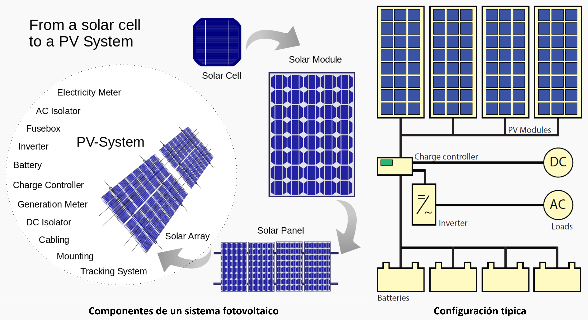
Un sistema FV moderno se entiende por niveles:
Componente |
Función principal |
|---|---|
Celda |
Genera corriente continua al separar pares electrón-hueco. |
Módulo |
Conecta y protege celdas en serie/paralelo. |
String/arreglo |
Agrupa módulos para alcanzar voltaje y potencia de diseño. |
Inversor con MPPT |
Convierte CC a CA y busca el punto de máxima potencia. |
BoS |
Incluye montaje fijo o tracker, cableado, protecciones, transformador, monitoreo y conexión a red. |
Batería opcional |
Desplaza energía solar y aporta flexibilidad. |
9.1.3. Componentes de una celda#
{kind=link}
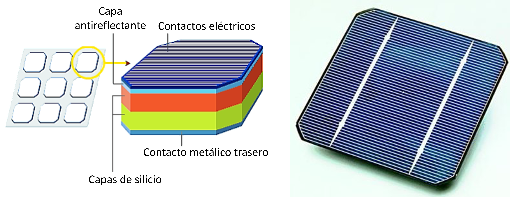
Dos capas de semiconductor dopado negativa y positivamente, se encargan de producir voltaje a través del efecto fotoeléctrico
La capa antireflectante tiene la función de mejorar la absorción de luz en el semiconductor
Los contactos metálicos en la parte superior e inferior de la celda tienen la función de recolectar la corriente fotogenerada.
9.2. Fundamentos de la conversión fotovoltaica en semiconductores#
9.2.1. Semiconductores#
Como discutimos en la unidad 3 del curso, un semiconductor es un material caracterizado por un bandgap (\(E_g\)) relativamente pequeño (\(\sim 1 - 2\) eV), de manera tal que un electrón puede ser llevado a la banda de conducción mediante una onda electromagnética o un potencial eléctrico.
{kind=link}
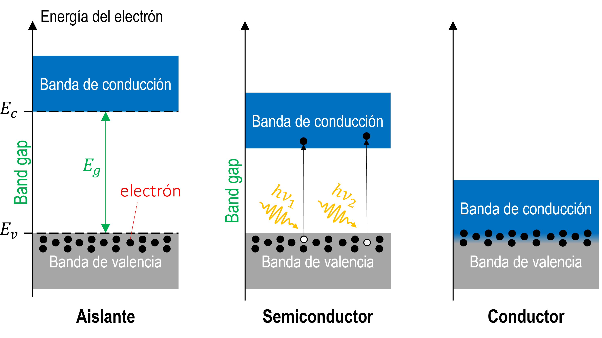
En el silicio, por ejemplo, \(E_g = 1.12\) eV. Así los fotones del espectro visible pueden ser absorbidos por el material.
{kind=link}
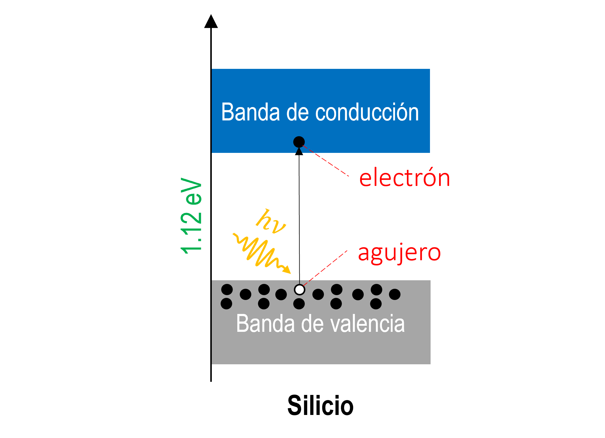
El electrón fotoexitado a la banda de conducción induce una carga neta positiva en la banda de valencia, la cual es deminada agujero o hueco.
Debido al potencial eléctrico inducido entre las bandas de conducción y valencia, el electrón retorna a la posición inicial ocupando el espacio del agujero. Llamamos a este fenómeno recombinación
9.2.2. Dopaje de semiconductores#
El dopaje de semiconductores consiste en introducir impuresas intencionalmente, con el fin de modular las propiedades eléctricas, ópticas o estructurales.
Para entender esto, consideremos el cristal de silicio. Este elemento tiene 4 electrones de valencia.
{kind=link}
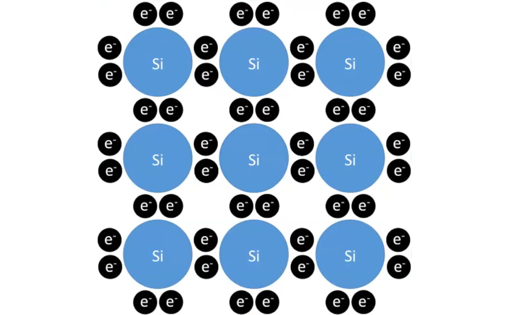
En el esquema, cada átomo de silicio (Si) forma enlaces covalentes con otros 4 átomos y, así, cada orbital en la banda de valencia está completo.
Debido a esto, los electrones permanecen fuertemente unidos al núcleo. El cristal de silicio, así, no conduce corriente eléctrica.
Consideremos, ahora, la presencia de una impuresa en el cristal.
{kind=link}
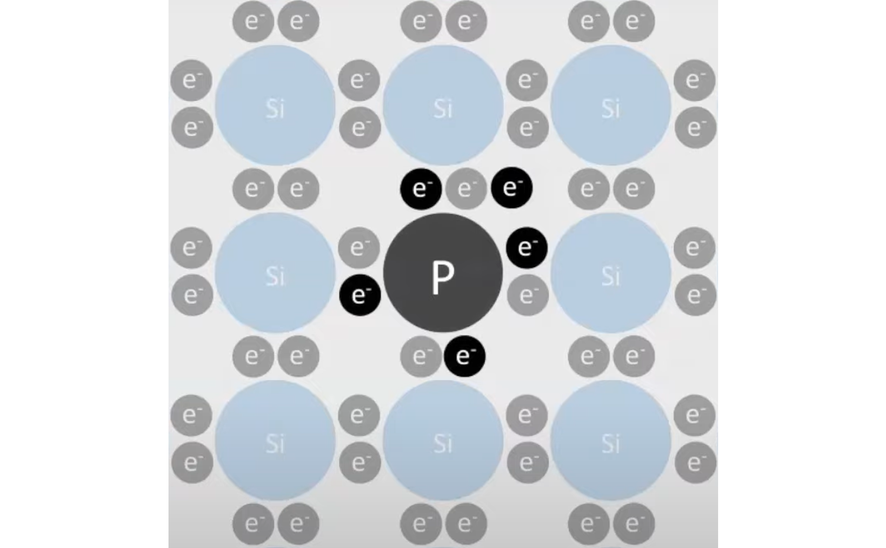
En este caso, consideraremos un átomo de fósforo (P), el cual reemplazará uno de los átomos de silicio.
El fósforo tiene 5 electrones de valencia. Debido que solo 4 electrones son necesarios para completar el orbital de cada átomo de silicio, el cristal quedará con un electrón libre.
Como resultado, el silicio dopado con fósforo quedará con una carga electrica neta negativa.
En este caso, decimos que el semiconductor es de tipo n.
Por el contrario, si el elemento dopante tiene menos electrones de valencia, el semiconductor quedará cargado positivamente
{kind=link}
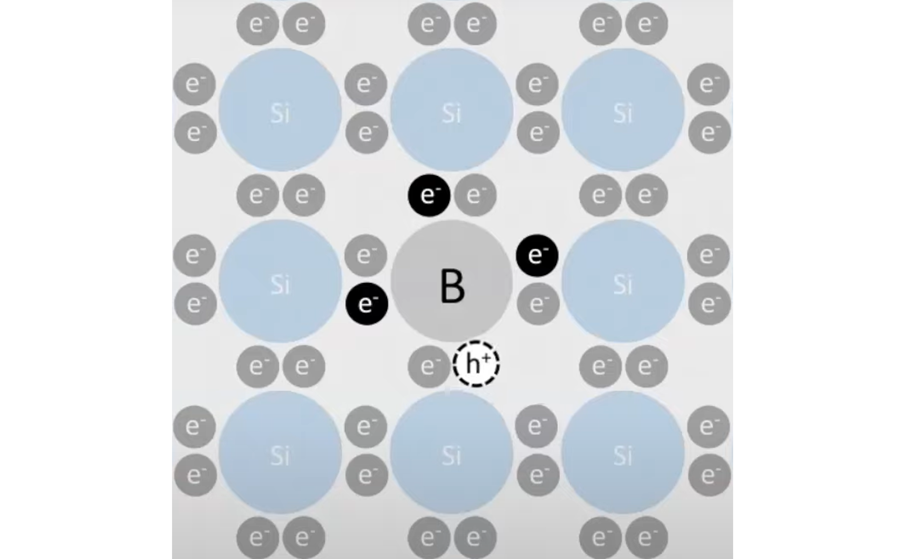
Esto es lo que sucede cuando introducimos un átomo de Boro (B) en el cristal de silicio. El boro tiene 3 electrónes de valencia y, como resultado, el cristal queda cargado positivamente.
En este caso, la aucencia de un electrón es equivalente a tener un agujero que puede moverse libremente por el cristal
En este caso, decimos que el semiconductor es de tipo p.
9.2.3. Unión p-n#
Cuando un semiconductor tipo n se une a un semiconductor tipo p, las cargas negativas y positivas de cada semiconductor se mueven hacia el lado contrario debido a la diferencia de concentraciones en cada semiconductor.
{kind=link}
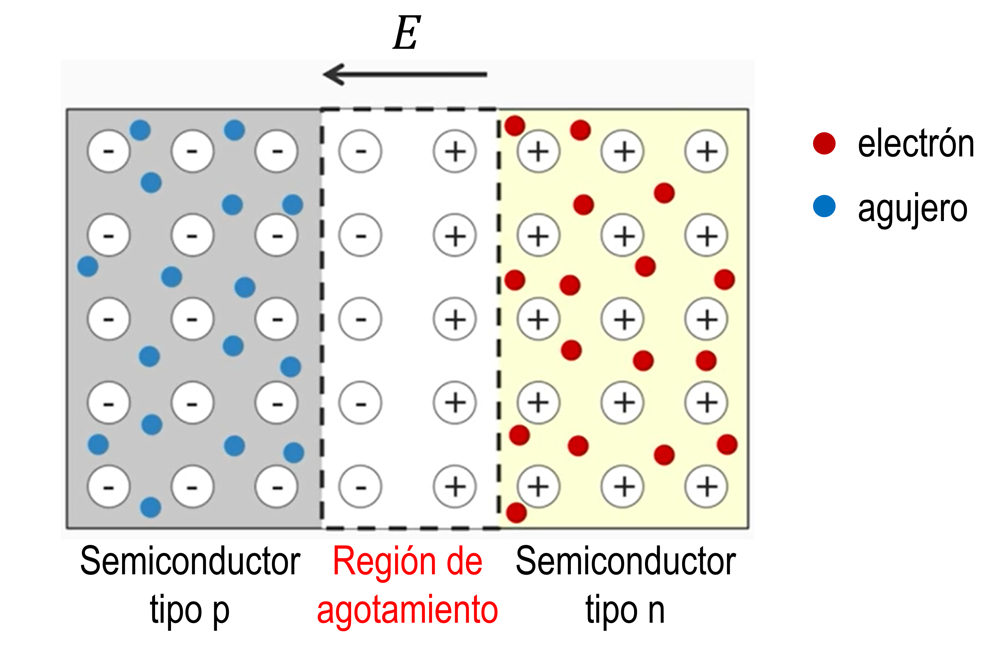
El flujo de cargas eléctricas y la recombinación en cada semiconductor forma una región intermedia denominada región de agotamiento
En equilibrio, la unión pn induce un campo eléctrico opuesto al campo eléctrico neto del sistema, que impide el flujo de cargas eléctricas en cada semiconductor hacia el lado opuesto.
La unión p-n es esencial para producir el efecto fotovoltaico.
{kind=link}
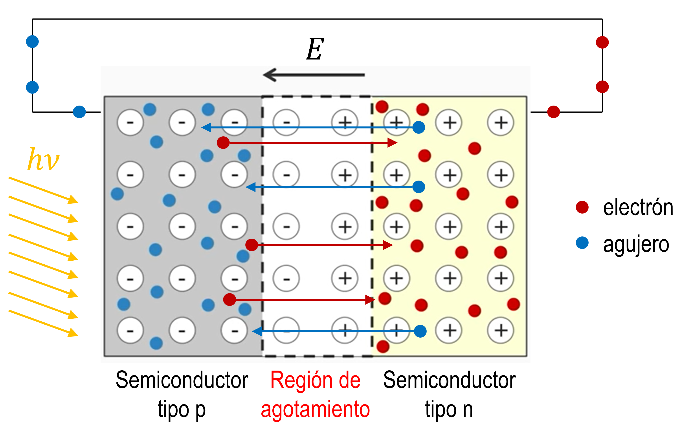
Esto debido a que el campo eléctrico en la junta permite separar el par electron-agujero fotoexcitado.
Notar en el esquema que los llamados portadores minoritarios (agujeros en el semiconductor n y electrones en el semiconductor p), son los encargados de producir una corriente eléctrica
9.2.4. Operación de una celda fotovoltaica#
En ausencia de iluminación la unión pn se comporta como un diodo
Cuando se aplica un voltaje opuesto a la dirección del campo eléctrico en la unión pn, nos referimos a un sesgo hacia atrás (reverse bias).
{kind=link}
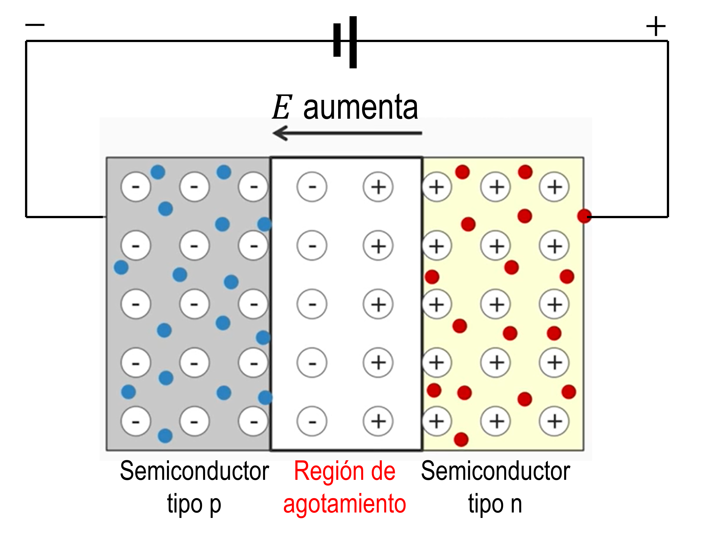
En este caso, la región de agotamiento aumenta su tamaño y la unión pn no conduce corriente
En el caso contrario, ,es decir, cuando se aplica un voltaje en la dirección del campo eléctrico en la unión pn, hablamos de un sesgo hacia adelante (forward bias)
{kind=link}
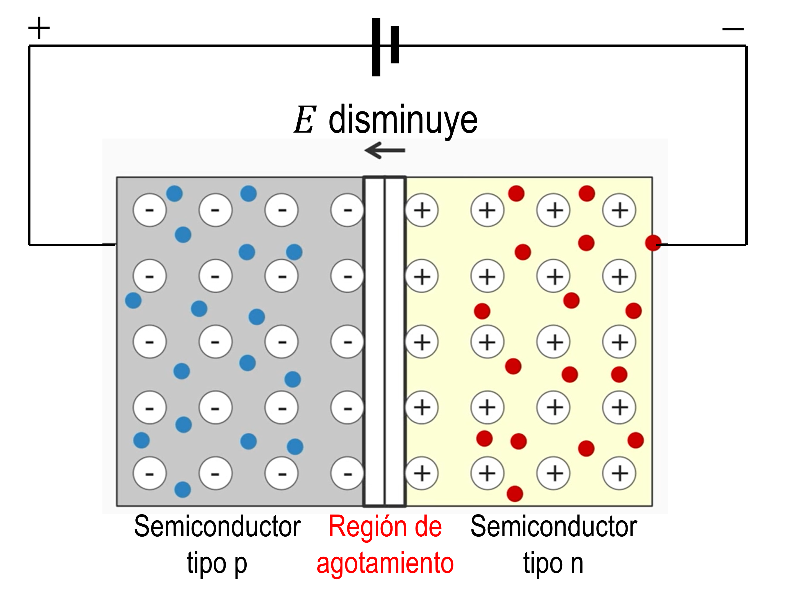
En este caso, la región de agotamiento disminuye su tamaño. Si el voltaje bajo el sesgo hacia adelante es suficientemente grande, la unión pn es capáz de conducir corriente
El siguiente video resume lo discutido en relación al funcionamiento de un diodo y el efecto de la unión pn.
Usando una curva J-V (Densidad de corriente vs Voltaje), el comportamiento es:
{kind=link}
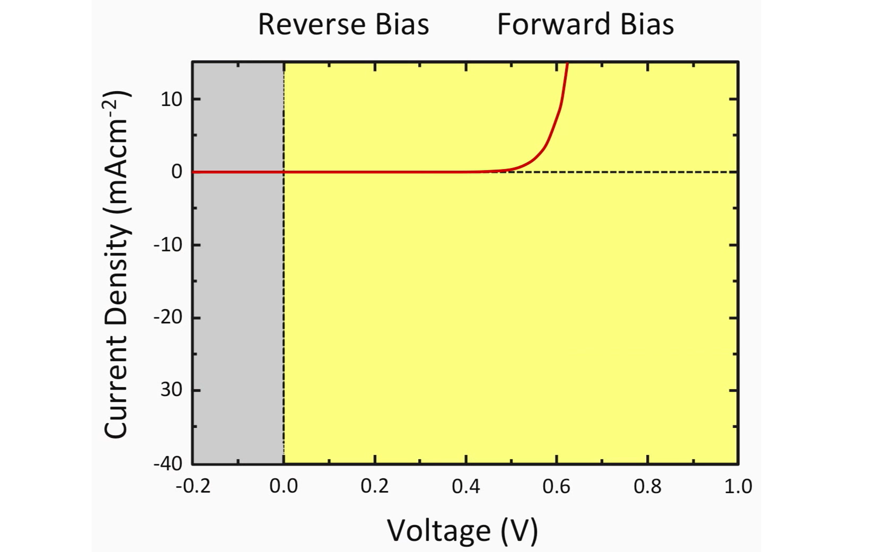
Matemáticamente:
donde \(q_e\) es la carga elemental del electrón (\(1.602\times10^{-19}~\mathrm{J/V}\)), \(k_B\) es la constante de Boltzmann, \(T\) es la temperatura del diodo, y \(J_0\) es la densidad de corriente de saturación. El valor de \(J_0\) es pequeño y depende de la temperatura de la celda.
Cuando la unión pn es iluminada, la corriente fotoinducida desplaza la curva J-V del diodo.
{kind=link}
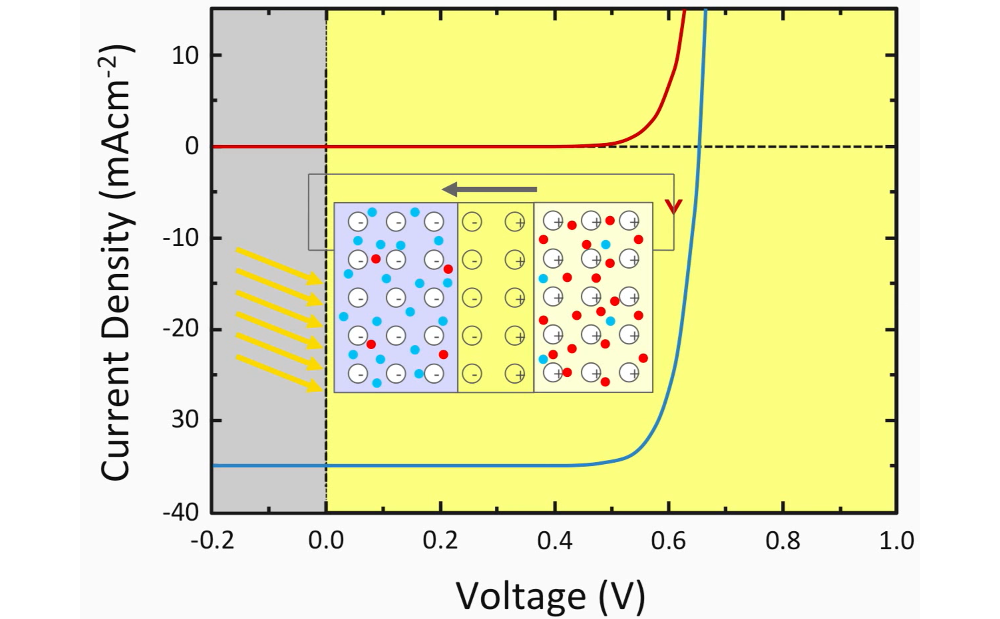
Matemáticamente:
donde \(J_\mathrm{L}\) es la densidad corriente fotoinducida.
Cabe destacar que la discución anterior está basada en parámetros por unidad de área. Generalmente, la información del fabricante de las celdas está dada en valores de corriente total, \(I = AJ\), donde \(A\) es la superficie expuestá del panel.
9.2.5. Pérdidas de energía en una celda fotovoltaica#
El comportamiento descrito anteriormente, representa una celda (of fotodiodo) idealizada. En la práctica, la celda presenta pérdidas eléctricas asociadas a su fabricación, las cuales diferenciamos mediante dos resistencias:
Resistencia en serie (\(R_\mathrm{s}\)), representando lás pérdidas por resistencia en el semiconductor en la interface de los contactos eléctricos, y en los contactos.
Resistencia shunt (\(R_\mathrm{sh}\)), representando lás pérdidas por derivación de corriente a lo largo de grietas en el material, o en los bordes de la celda.
El efecto de ambas resistencias en la forma de la curva I-V se ilustra en la figura.
{kind=link}
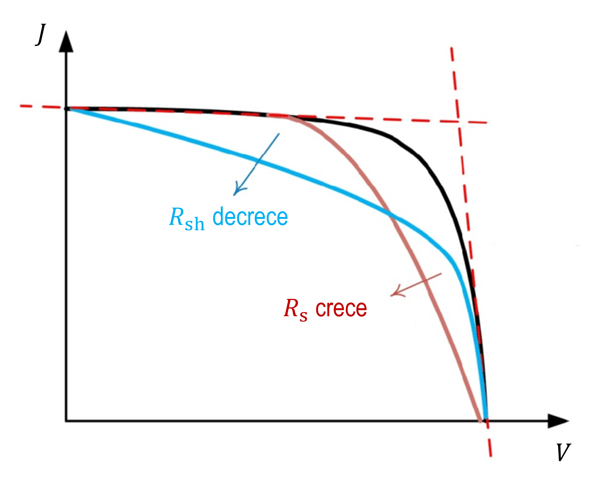
En la práctica \(R_\mathrm{s}\) debe ser lo más baja posible, y \(R_\mathrm{sh}\) debe ser lo más alta posible.
9.2.6. El modelo del diodo único (SDM)#
Podemos resumir todos los conceptos revisados anteriormente mediante un circuito eléctrico equivalente, como:
{kind=link}
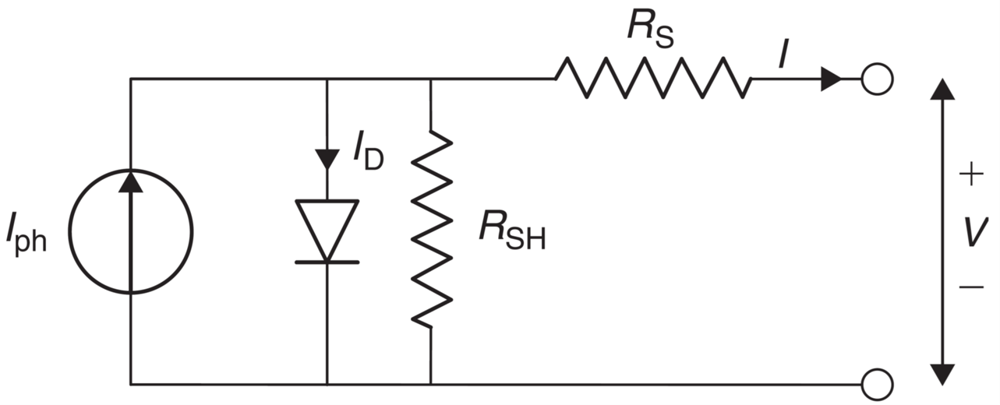
En base a este circuito, y considerando la corriente \(I_L\) en sentido positivo, tenemos que la corriente generada por la celda, \(I\), es:
donde \(I_\mathrm{sh} = V_a/R_\mathrm{sh}\) representa las pérdidas por derivación, con \(V_a = V + IR_\mathrm{s}\), y parámetro \(I_\mathrm{dark} = I_0\left[\exp\left(\frac{q_eV_a}{k_\mathrm{B}T}\right) - 1 \right]\)
Explicitamente, el resultado es un modelo definido por 5 parámetros (\(I_L\), \(I_0\), \(R_\mathrm{s}\), \(R_\mathrm{sh}\) y \(n\)), denominado modelo de diodo único o SDM:
donde \(n\) es el factor de idealidad del diodo y \(V_T = k_\mathrm{B}T/q_e\) es el voltaje térmico.
9.2.7. Caracterización de una celda fotovoltaica#
En base al SDM, la curva I-V (o J-V) de una celda fotovoltaica tiene la siguiente forma:
{kind=link}
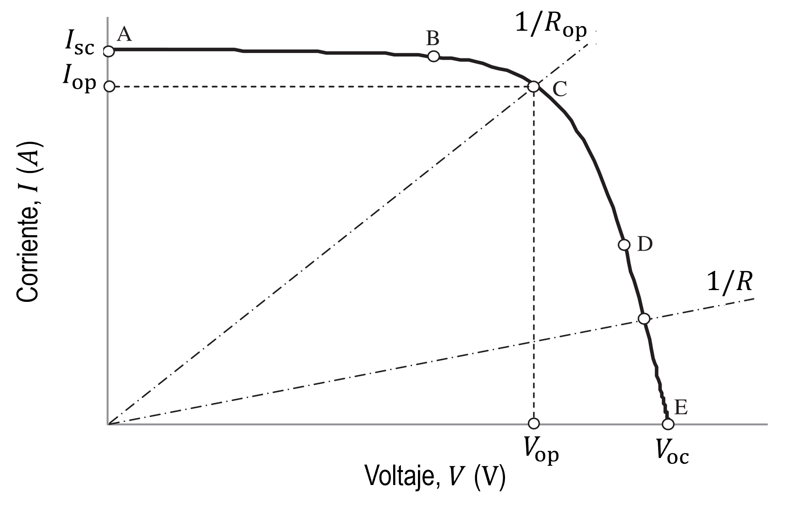
De está curva distinguimos:
Corriente de cortocircuito \(I_\mathrm{sc}\): máxima corriente que puede entregar la celda cuando \(V = 0\).
Voltaje de circuito abierto \(V_\mathrm{oc}\): máximo voltaje que puede entregar la celda cuando \(I = 0\).
Si los terminales de la celda se conectan a una resistencia \(R\), el punto de operación está dado por la intersección de la curva I-V y la curva \(I = V/R\).
La potencia de la celda, \(P\), está dada por \(P= IV\)
{kind=link}
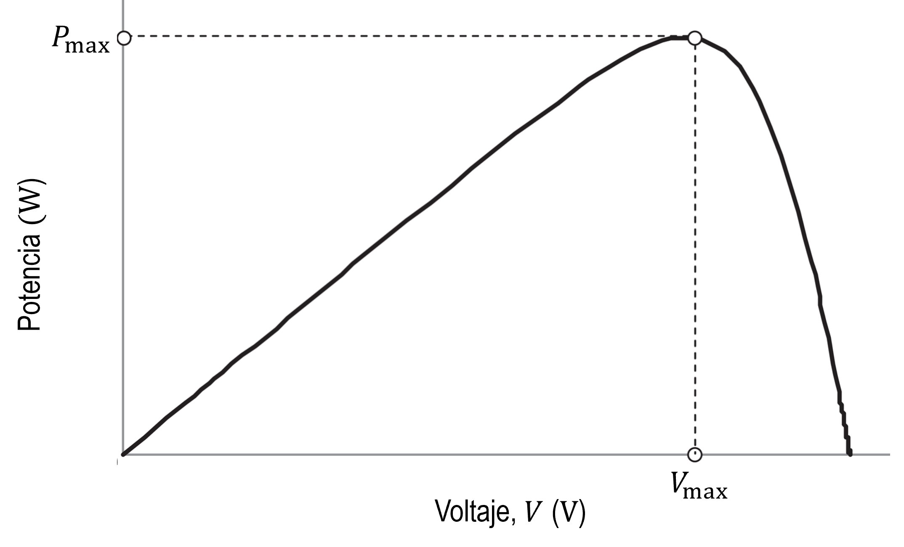
Como podemos ver en la curva, la potencia entregada por la celda aumenta hasta un valor máximo entre \(V_\mathrm{oc}\) e \(I_\mathrm{sc}\).
Este punto representa la condición donde el desempeño de la celda es óptimo.
A partir de esto, definimos el factor de llenado (fill factor), \(\mathrm{FF}\) como:
Este es un parámetro de diseño de la celda. A través de este parámetro podemos determinar la potencia máxima como \(P_\mathrm{max} = \mathrm{FF}I_\mathrm{sc}V_\mathrm{oc}\).
Otro parámetro de interés es la máxima eficiencia de la celda, definida por:
En la práctica, estas curvas se obtienen mediante ensayos en condiciones estándar de prueba (STC): irradiancia de 1000 W/m², espectro AM1.5 y temperatura de celda de 25°C.
La siguiente tabla, muestra parámetros típicos en un datasheet de un módulo fotovoltaico.
{kind=link}
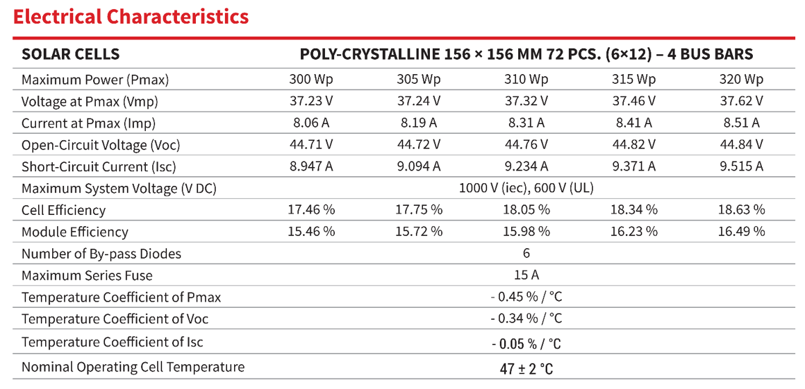
Los valores de \(P_\mathrm{max}\) se entregan en \(\mathrm{Wp}\) o watt peak, que representa la potencia en el punto de operación óptimo bajo STC.
En este caso el fabricante también entrega las curvas I-V para distintos niveles de irradiancia y temperatura.
{kind=link}
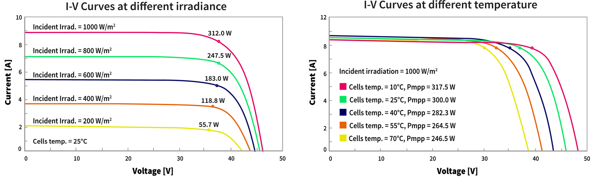
La corriente de cortocircuito \(I_\mathrm{sc}\) aumenta casi linealmente con la irradiancia y, por consecuencia, la potencia entregada por el panel es mayor.
Un aumento de temperatura disminuye \(V_\mathrm{oc}\) y, por lo tanto, reduce la potencia disponible.
9.2.8. Máxima eficiencia en celdas fotovoltaicas#
Debido a que la conversión fotovoltaica está basada en absorción de fotones y separación de cargas, la eficiencia termodinámica de una celda está condicionada por el bandgap del semiconductor utilizado.
Por ejemplo, en el caso del silicio (\(E_\mathrm{g} = 1.12~\mathrm{eV}\)), solo una porción del espectro solar es efectivamente convertido a electricidad.
{kind=link}
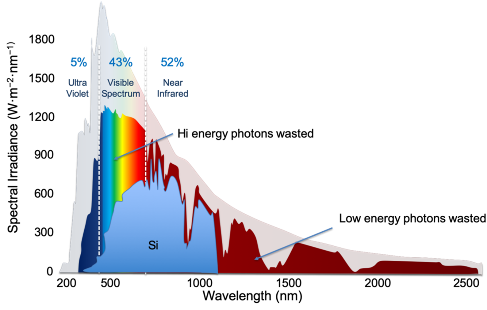
En teoría, además de las pérdidas asociadas al bandgap, existen otros factores inevitables que afectan la eficiencia de conversión, como la termalización de portadores, la emisión radiativa y la recombinación.
El límite de Shockley–Queisser, define la máxima eficiencia teórica de una celda fotovoltaica, considerando estos factores:
33.2% para una celda de unión pn simple (un semiconductor) con un bandgap de 1.34 eV. El valor desciende a 32% en el caso del silicio.
42% para celdas de doble unión, y 49% para celdas de triple unión
65% para celdas de 5 uniones con concentración de radiación
9.2.9. Fabricación de celdas fotovoltaicas#
Los métodos de fabricación de las celdas dependen del material, la arquitectura de contacto y la cristalinidad deseada.
El video a continuación muestra el procedimiento de fabricación de celdas de silicio cristalino, el material más utilizado en paneles.
9.3. Módulos fotovoltaicos#
9.3.1. Conexión entre celdas fotovoltaicas#
En la práctica, las celdas fotovoltaicas se agrupan en un módulo mediante conexiones en serie y paralelo para aumentar corriente, voltaje y potencia total.
{kind=link}
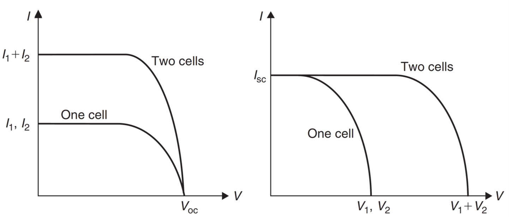
En el siguiente esquema se muestra un módulo con un arreglo de \(N_\mathrm{SM}\) celdas en serie y \(N_\mathrm{PM}\) en paralelo.
{kind=link}
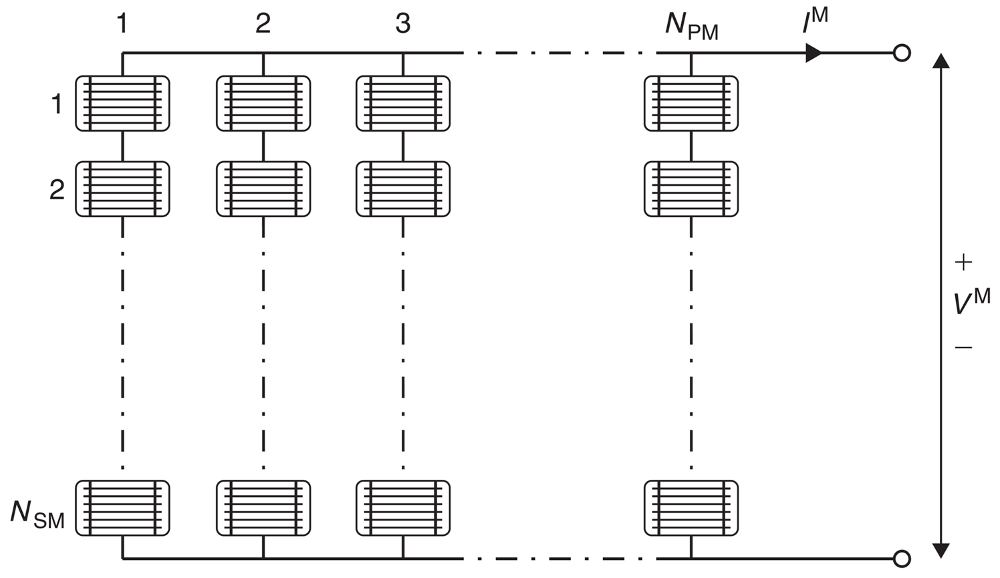
La corriente de cortocircuito del módulo, \(I_\mathrm{sc}^\mathrm{M}\), está asociada con \(I_\mathrm{sc}\) mediante:
El voltaje de circuito abierto del módulo, \(V_\mathrm{oc}^\mathrm{M}\), está asociado con \(V_\mathrm{oc}\) mediante:
9.3.2. Componentes de un módulo fotovoltaico#
El módulo protege a las celdas contra esfuerzos mecúnicos, humedad, radiación UV y ciclos térmicos, manteniendo al mismo tiempo baja pérdida óptica y eléctrica.
En módulos modernos se encuentran típicamente:
Vidrio frontal low-iron: alta transmitancia y protección mecánica.
Encapsulante: EVA, POE o laminados EPE, especialmente en módulos n-type y bifaciales.
Backsheet o vidrio trasero: los diseños glass-glass mejoran durabilidad y facilitan bifacialidad.
Interconectores, multi-busbar, caja de conexión y diodos bypass: reducen pérdidas, recolectan corriente y limitan puntos calientes.
Fraunhofer ISE 2025 destaca mayor eficiencia, menor uso de plata, vida útil más larga y mejor reciclabilidad como líneas de mejora del módulo.
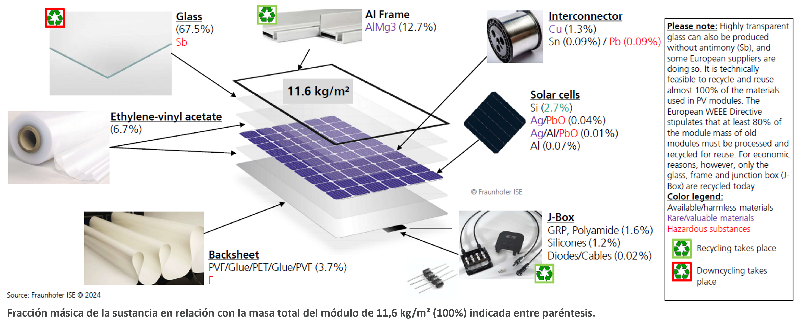
Por último, varios módulos solares se conectan en arreglos serie/paralelo para aumentar la potencia del sistema fotovoltaico.
{kind=link}
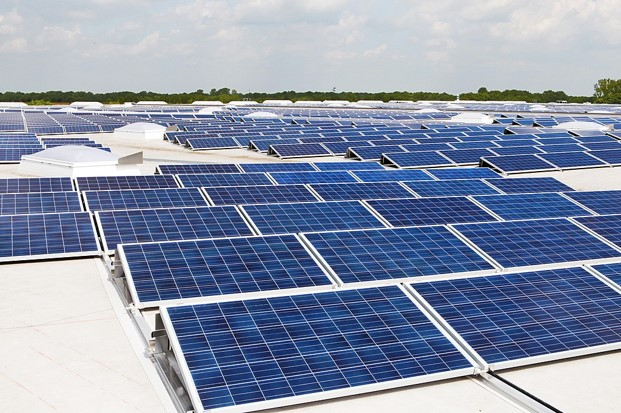
9.4. Principales tecnologías#
9.4.1. Silicio cristalino comercial: PERC, TOPCon, HJT y back-contact#
El mercado actual está dominado por silicio cristalino. IEA PVPS 2025 reporta cerca de 98% de producción global c-Si en 2024; Fraunhofer ISE 2025 estima 687 GWp mono-Si, 16 GWp de película delgada y 703 GWp totales.
La distinción clave ya no es mono-Si versus poly-Si: el multicristalino prácticamente desapareció. La transición relevante es desde p-type PERC hacia n-type TOPCon, HJT y back-contact. Fraunhofer ISE reporta que TOPCon y HJT están reemplazando a PERC.
{kind=link}
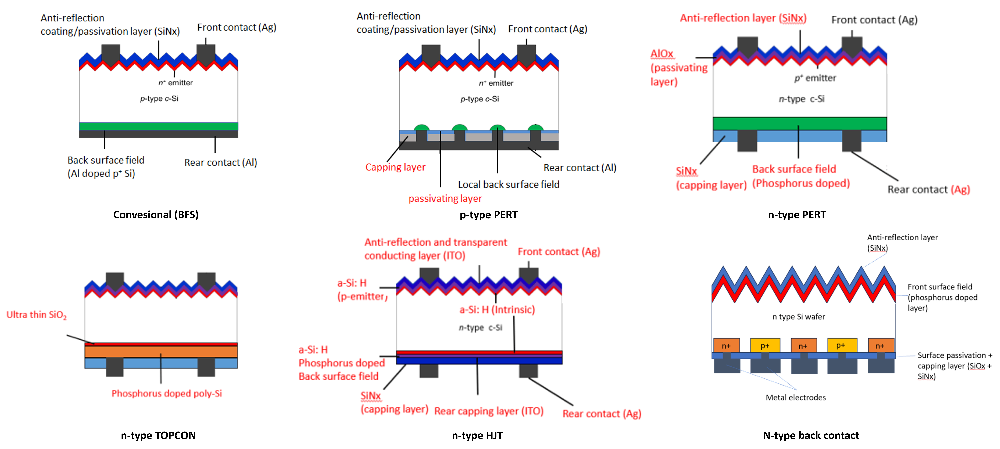
{kind=link}
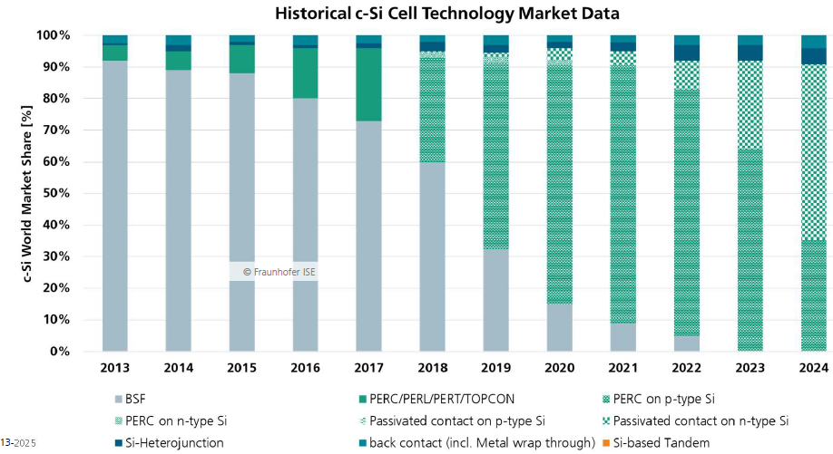
9.4.2. Módulos bifaciales y trackers#
Los módulos bifaciales convierten radiación por la cara frontal y parte de la radiación reflejada hacia la cara posterior. Su ganancia depende de albedo, altura, separación entre filas y sombreado posterior. En plantas utility-scale suelen combinarse con trackers de un eje.
{kind=link}
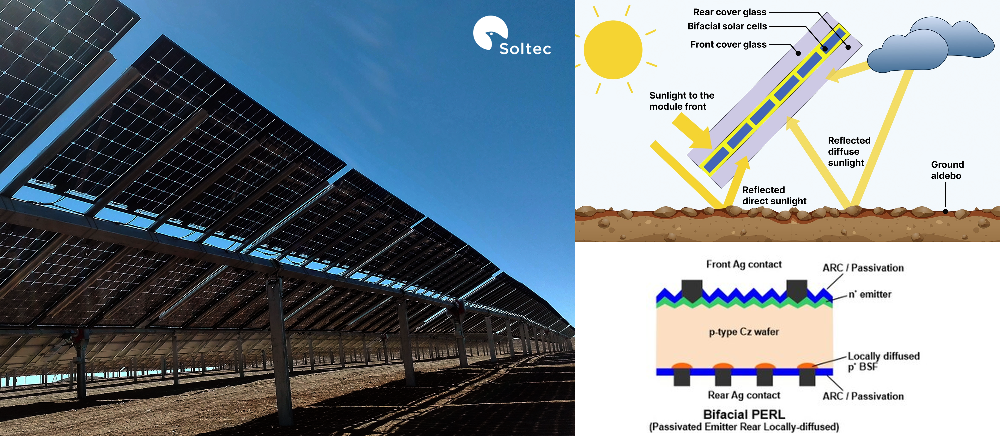
Según IEA PVPS 2025, las tecnologías n-type representan cerca de 70% de la producción global y los bifaciales más de 75% de los módulos fabricados.
9.4.3. Película delgada: CdTe, CIGS y a-Si#
{kind=link}
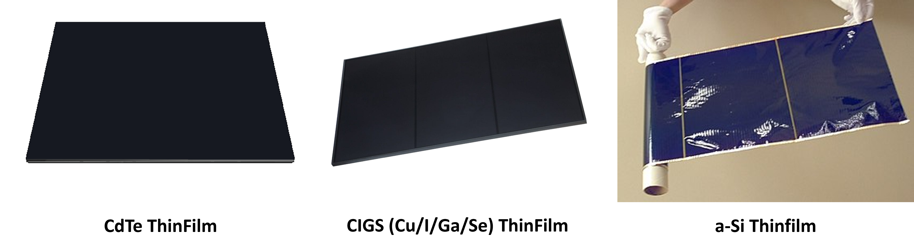
Las tecnologías de película delgada usan capas semiconductoras mucho más delgadas que una oblea de silicio. En 2024 representaron cerca de 2% de la producción global, dominadas por CdTe, según IEA PVPS 2025. CdTe mantiene presencia industrial; CIGS conserva interés para sustratos flexibles o integración; a-Si queda principalmente como tecnología histórica o de nicho.
9.4.4. Tecnologías emergentes#
Perovskitas, tándem perovskita/silicio, OPV y quantum dots son líneas activas de investigación. Los tándem perovskita/silicio ya superan en laboratorio a las celdas de unión simple de silicio según NREL/NLR 2026, pero para masificarse deben probar estabilidad, encapsulamiento, baja degradación y fabricación reproducible.
{kind=link}
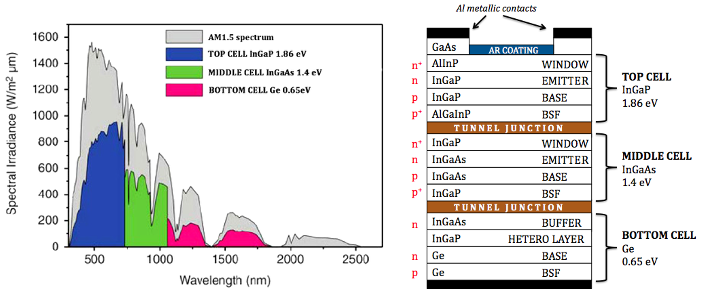
9.4.5. Análisis comparativo de tecnologías#
{kind=link}
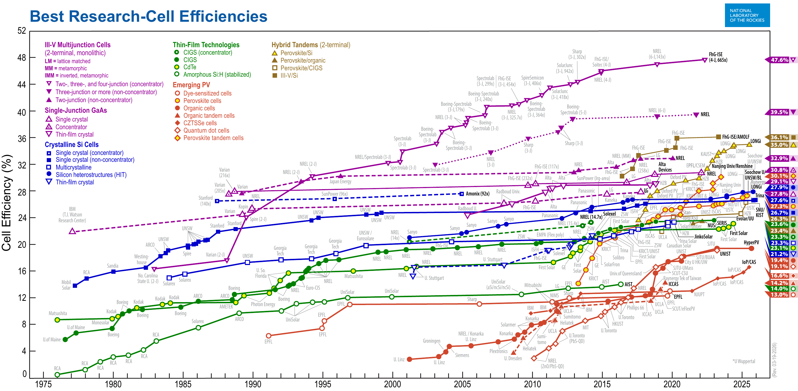
9.5. Reflexiones finales#
9.5.1. Situación mundial#
Cuatro ideas resumen el estado actual:
Crecimiento: IEA Renewables 2025 proyecta que la FV aporte cerca de 80% del crecimiento renovable 2025-2030.
Costos: IRENA 2025 reporta 0.043 USD/kWh como LCOE FV utility-scale promedio en 2024, condicionado por factores locales.
Tecnología: c-Si, n-type y bifacial dominan la producción industrial.
Integración: IEA Renewables 2025 advierte más vertimiento cuando faltan transmisión, flexibilidad y almacenamiento.
Las aplicaciones incluyen utility-scale, autoconsumo, PMGD, FV+batería, agrivoltaica, floating PV, BIPV y VIPV. IEA PVPS 2025 indica que utility-scale fue cerca de 62% de nuevas instalaciones en 2024.
9.5.2. Caso Chile#
Chile combina alto recurso solar con restricciones de sistema.
La CNE, Reporte Mensual ERNC, marzo 2026, informa 19.1 GW de capacidad instalada en el ERNC a febrero de 2026 (equivalente a 51% de la capacidad nacional).
El Coordinador Eléctrico Nacional, Informe Monitoreo 2025, reporta que el SEN cerró 2025 con 39.2 GW instalados, solar en 31.7% de la capacidad y BESS en 3.2 GW.
Según IEA PVPS 2025, Chile tuvo 5.9 TWh de reducción solar y eólica en 2024. Esto muestra que transmisión, almacenamiento y operación flexible son parte del valor real de la FV.
9.6. Referencias#
Kalogirou S. A. Chapter 9. Photovoltaic Systems in Solar Energy Engineering: Processes and Systems, 2nd Ed., Academic Press, 2014.
Fraunhofer Institute for Solar Energy Systems ISE. Photovoltaics Report. Last updated: October 31, 2025. https://www.ise.fraunhofer.de/en/publications/studies/photovoltaics-report.html
IEA PVPS. Trends in Photovoltaic Applications 2025. International Energy Agency Photovoltaic Power Systems Programme, 2025. https://iea-pvps.org/trends_reports/trends-2025/
International Energy Agency (IEA). Renewables 2025. IEA, Paris, 2025. https://www.iea.org/reports/renewables-2025
International Renewable Energy Agency (IRENA). Renewable Power Generation Costs in 2024. IRENA, Abu Dhabi, 2025. https://www.irena.org/Publications/2025/Jun/Renewable-Power-Generation-Costs-in-2024
National Renewable Energy Laboratory / National Laboratory of the Rockies (NREL/NLR). Best Research-Cell Efficiency Chart, Rev. 2026-03-19. https://www.nrel.gov/pv/cell-efficiency
Comisión Nacional de Energía (CNE). Reporte Mensual ERNC - Marzo 2026. Gobierno de Chile, 2026. https://www.cne.cl/wp-content/uploads/2026/03/RMensual_ERNC_v202603.pdf
Coordinador Eléctrico Nacional. Informe Monitoreo de la Competencia en el Mercado Eléctrico 2025. Chile, 2026. https://www.coordinador.cl/wp-content/uploads/2026/04/2026-04-23-INFORME-MONITOREO-2025-.pdf